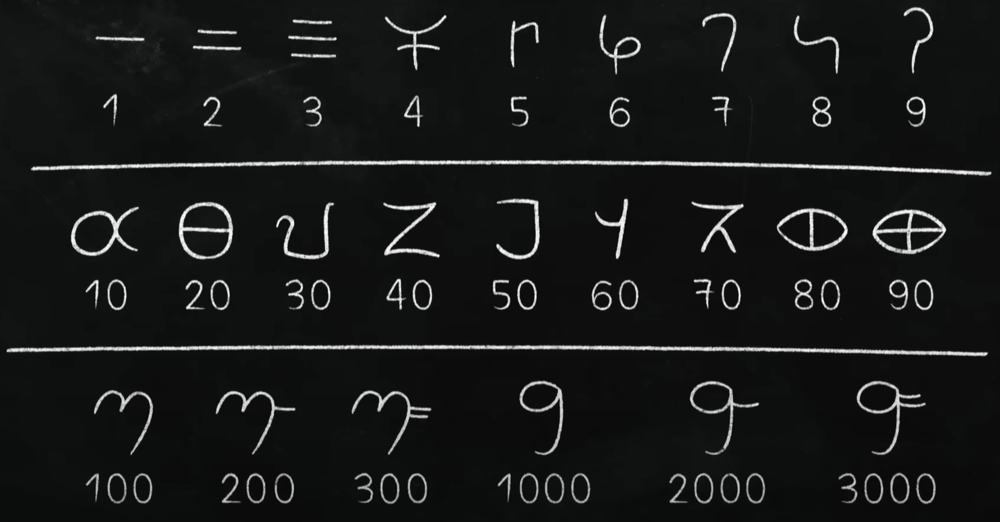
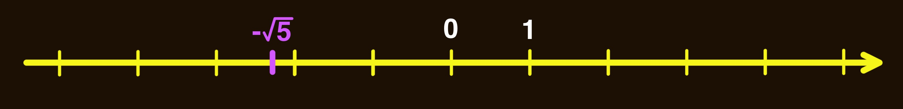
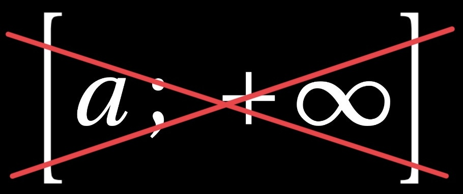
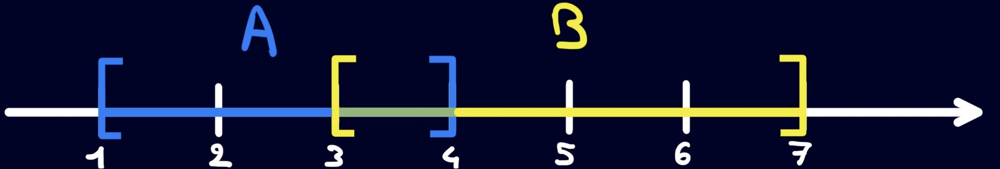

Os d'Ishango
(~ 20 000 ans avant notre ère)

Os de Lebombo
(~ 43 000 ans avant notre ère)
Tablette sumérienne

Tablette sumérienne
(~ 3 500 ans avant notre ère)
Inscriptions de Naneghat
Inscriptions de Naneghat
(70-60 avant JC, il y a ~ 2 000 ans)
Inscriptions de Naneghat
(70-60 avant JC, il y a ~ 2 000 ans)
Écriture Brahmi

Chapitre 3 : Ensembles
de nombres
I/ Les grands ensembles
I/ Les grands ensembles
1) Nombres entiers
• L'ensemble des entiers naturels noté
$ \mathbb{N} $, est l'ensemble des entiers positifs ou nuls :
0;
1;
2;
3;
4; ...
• L'ensemble des entiers relatifs noté
$ \mathbb{Z} $, est l'ensemble des entiers positifs et négatifs :
...
-3;
-2;
-1;
0;
1;
2;
3; ...
• L'ensemble des entiers naturels noté
$ \mathbb{N} $, est l'ensemble des entiers positifs ou nuls :
0;
1;
2;
3;
4; ...
• L'ensemble des entiers relatifs noté
$ \mathbb{Z} $, est l'ensemble des entiers positifs et négatifs :
...
-3;
-2;
-1;
0;
1;
2;
3; ...
Un entier naturel est aussi un entier relatif.
• On dit qu'un nombre appartient à un
ensemble, noté avec le symbole « $ \in $ ».
Exs : $3 \in \mathbb{N}$, $-5 \in \mathbb{Z}$.
• On dit qu'un ensemble est inclus
dans un autre ensemble, noté avec le symbole « $ \subset $ ».
Ex : $ \mathbb{N} \subset \mathbb{Z} $.
On note $ \mathbb{N}^* $ l'ensemble $ \mathbb{N} \setminus \{0\} $.
Idem pour $ \mathbb{Z}^*$ $= \mathbb{Z} \setminus \{0\} $.
se lit « $ \mathbb{N} $ privé de 0 »
2) Nombres décimaux et rationnels
Un nombre décimal est un nombre qui peut s’écrire avec un nombre
fini de chiffres après la virgule.
L’ensemble des nombres décimaux est noté $ \mathbb{D} $.
• $0,56$ $\,\in\,$ $\mathbb{D}$
• $\dfrac{3}{4}$ $\,\in\,$ $\mathbb{D}$ car $\dfrac{3}{4} = 0{,}75$
• $-7$ $\,\in\,$ $\mathbb{D}$
• $\dfrac{1}{3}$ $\,\notin\,$ $\mathbb{D}$ car $\dfrac{1}{3} = 0{,}333\text{...}$
Un élément de $\mathbb{D}$ peut toujours s'écrire sous la forme $\large\frac{a}{10^n}$ avec $a\in\mathbb{Z}$ et $n\in\mathbb{N}$.
$-3,1=\frac{-31}{10}$
$1,26=\frac{126}{100}=\frac{126}{10^2}$
Un nombre rationnel est un nombre qui peut s’écrire
sous forme de fraction :
\[ \dfrac{p}{q} \quad \text{où } p \in \mathbb{Z},\; q \in \mathbb{N}^* \]
L’ensemble des rationnels est noté $ \mathbb{Q} $.
Tous les décimaux sont rationnels, i.e. $ \mathbb{D}\subset\mathbb{Q} $.
$0,378=\frac{378}{1000}$ $\quad$ ainsi $0,378\in\mathbb{Q}$.
3) Nombres irrationnels et réels
3) Nombres irrationnels et réels
Un nombre irrationnel est un nombre qui n’est pas rationnel,
i.e. qui ne peut pas s’écrire sous la forme d’une fraction.
Les décimales d’un nombre irrationnel sont en nombre infini
et se suivent sans logique.
✗
$ \dfrac{1}{3} \approx 0{,}333$... et $ \dfrac{25}{33} \approx 0{,}757575$...
ne sont pas irrationnels.
✓
$ \sqrt{2} $, $ \sqrt{3} $, et $ \pi $ sont irrationnels.
Culture mathématique
On soupçonne $ \pi $ d’être un nombre univers !
On soupçonne $ \pi $ d’être un nombre univers !
Un nombre réel est un nombre rationnel ou irrationnel.
L’ensemble des réels est noté $ \mathbb{R} $.
$ \mathbb{N} \subset \mathbb{Z} \subset \mathbb{D} \subset \mathbb{Q} \subset \mathbb{R} $
$ \mathbb{N} \subset \mathbb{Z} \subset \mathbb{D} \subset \mathbb{Q} \subset \mathbb{R} $
• Un nombre réel est représenté par un unique point sur la
droite numérique :

• L’ensemble des irrationnels peut se noter
$ \mathbb{R} \setminus \mathbb{Q} $
II/ Construire de nouveaux ensembles
1) Liste d'éléments
On peut définir un ensemble en listant ses éléments entre les accolades $\{$ et $\}$.
Exemple :
$A = \Big\{$
$-2$ ;
$0{,}1$ ;
$\pi$
$\Big\}$ contient 3 éléments.
2) Les intervalles
2) Les intervalles
$ \leqslant $ se lit
inférieur ou égal et
$ \lt $ se lit
strictement inférieur.
Un intervalle est une partie de $ \mathbb{R} $
« d’un seul tenant ».
On les note à l’aide de crochets
$\big[$ et $\big]$
qui peuvent être
ouverts ou fermés.
| Intervalle | Inégalité | Droite numérique |
|---|---|---|
| ⚠ | On ne ferme jamais sur l’infini ! |  | ⚠ |
3) Unions et intersections d'intervalles
Soit $A$ et $B$ deux intervalles.
Leur union notée
$ A \cup B $
est l’ensemble des réels qui appartiennent
à $A$ ou à $B$.
Leur union notée
$ A \cup B $
est l’ensemble des réels qui appartiennent
à $A$ ou à $B$.
Leur intersection notée
$ A \cap B $
est l’ensemble des réels qui appartiennent
à la fois à $A$ et à $B$.
$A = \big[1;4\big]$ et
$B = \big[3;7\big]$

$A \cup B = $ ? $\qquad\qquad$ $A \cap B = $ ?
$A = \big[1;4\big]$ et
$B = \big[3;7\big]$
$A \cup B = \big[1;7\big]$ $\qquad$ $A \cap B = \big[3;4\big]$
4) L'ensemble vide
L’ensemble vide est l’ensemble qui ne contient aucun élément.
On le note $ \varnothing $.
4) L'ensemble vide
L’ensemble vide est l’ensemble qui ne contient aucun élément.
On le note $ \varnothing $.
$A= \big[1;3\big]$ et $B = \big[8;10\big]$. Dans ce cas $A \cap B = \varnothing$
L’ensemble vide est l’ensemble qui ne contient aucun élément.
On le note $ \varnothing $.
$A= \big[1;3\big]$ et $B = \big[8;10\big]$. Dans ce cas $A \cap B = \varnothing$
❧
Fin de Chapitre
❧